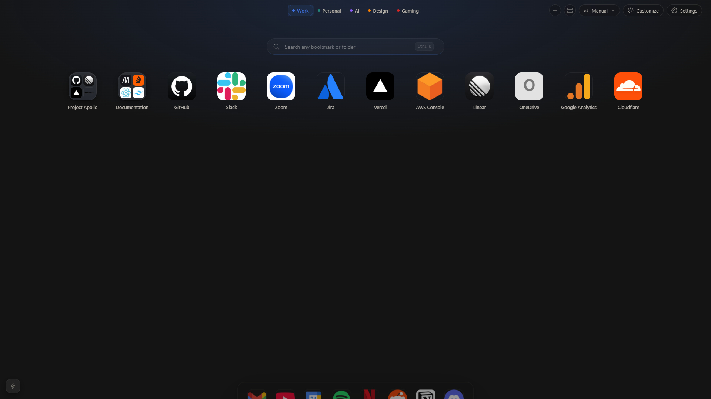

Flipp's Favorites
Transform your new-tab page into a productive workspace. Access your most important sites instantly, customize everything to match your workflows.
Most bookmark tools are frustrating to use.
Cluttered interfaces, slow loading, privacy concerns, and features you don't need. Your bookmarks deserve better than being buried in a mess of unused tools and ads.
Same bookmarks. Better home.
Install once and your existing bookmarks appear instantly — synced directly from your browser, zero setup. Every new tab becomes a customizable grid with beautiful icons, perfect layouts, and instant access.

A workspace for every context
Turn any folder into its own self-contained space, with its own theme and layout. Work stays work; gaming stays gaming — nothing bleeds between them.
Your bookmarks, already there
Reads your browser's bookmarks the moment you install — no CSV imports, no manual entry. Open a new tab and they're waiting for you.
Your essentials, one reach away
The Dock keeps your most-used folders and sites pinned to every new tab — always visible, hover-only, or tucked away until you need it.
Edit right on the page
Rename, create, and reorganise folders without ever opening the browser's bookmark manager. Multi-select to move or tidy in bulk.
Private by default
No cloud, no accounts, no tracking. Everything's stored locally — and you can back it all up or restore it as a single JSON file.
Make it unmistakably yours
List or Grid view, Gradient or wallpaper backgrounds, tile shapes, spacing, and accent colors — dial in every detail, and each workspace remembers its own.